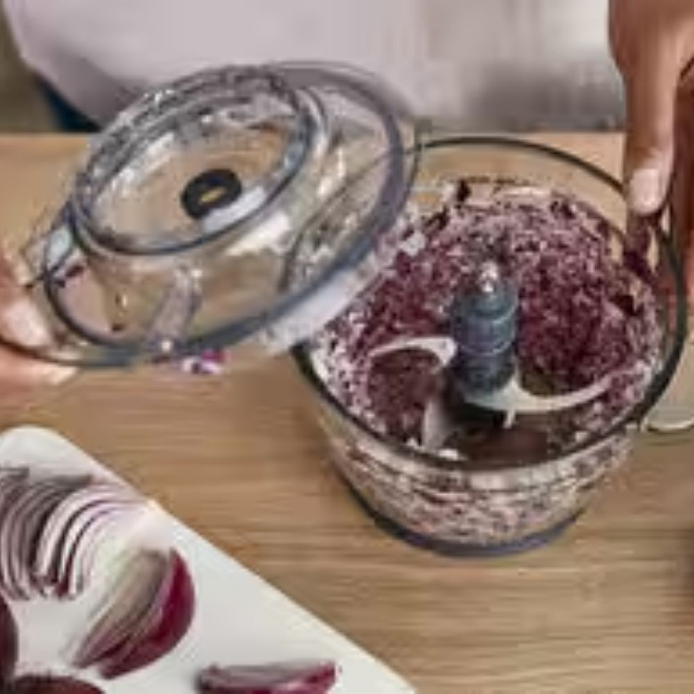
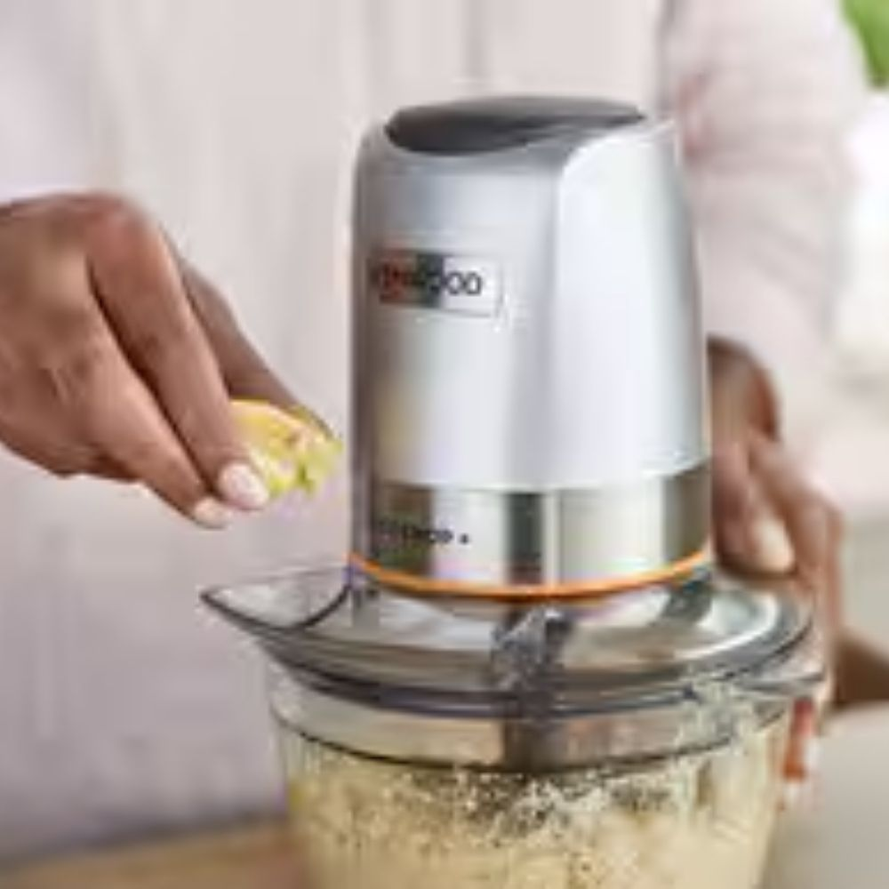
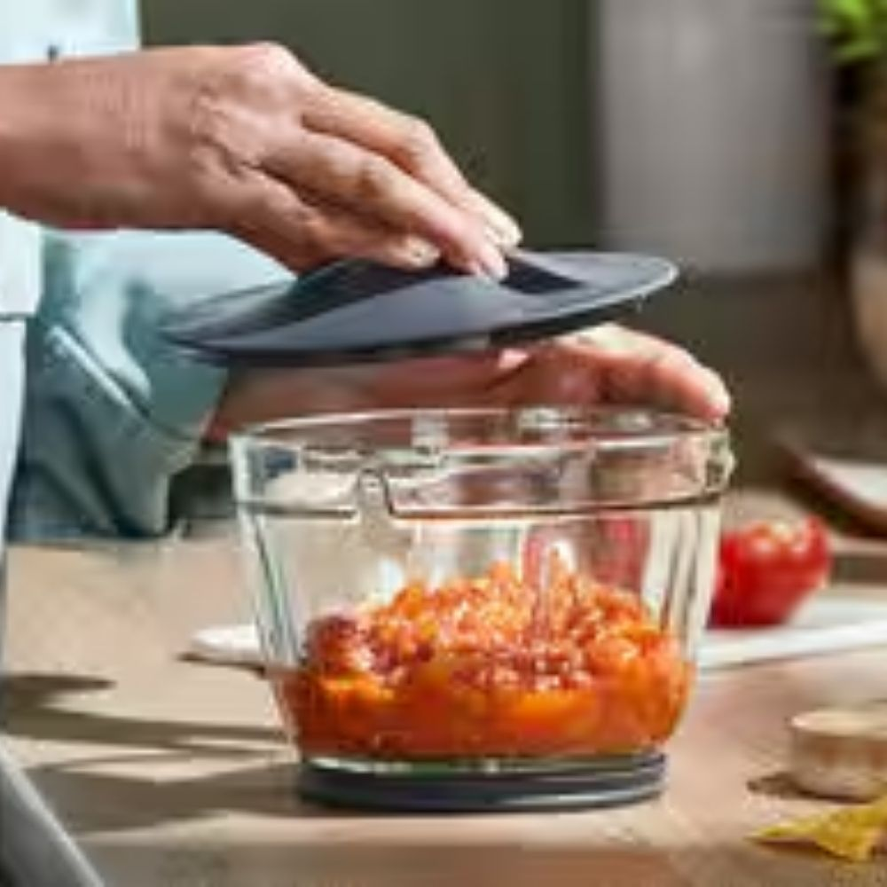
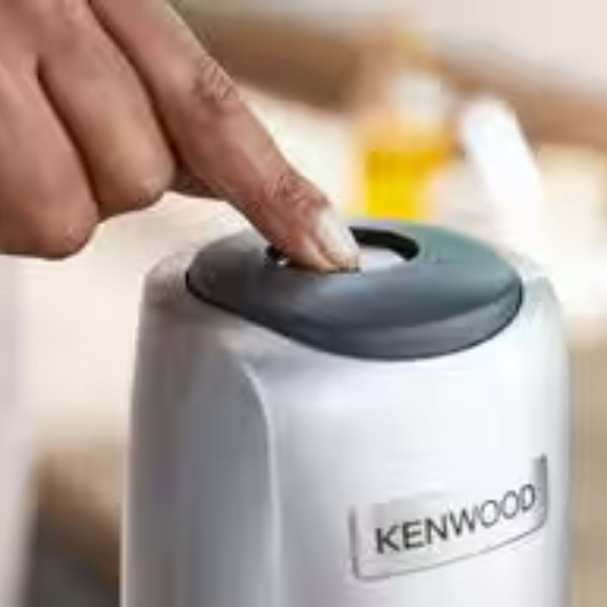
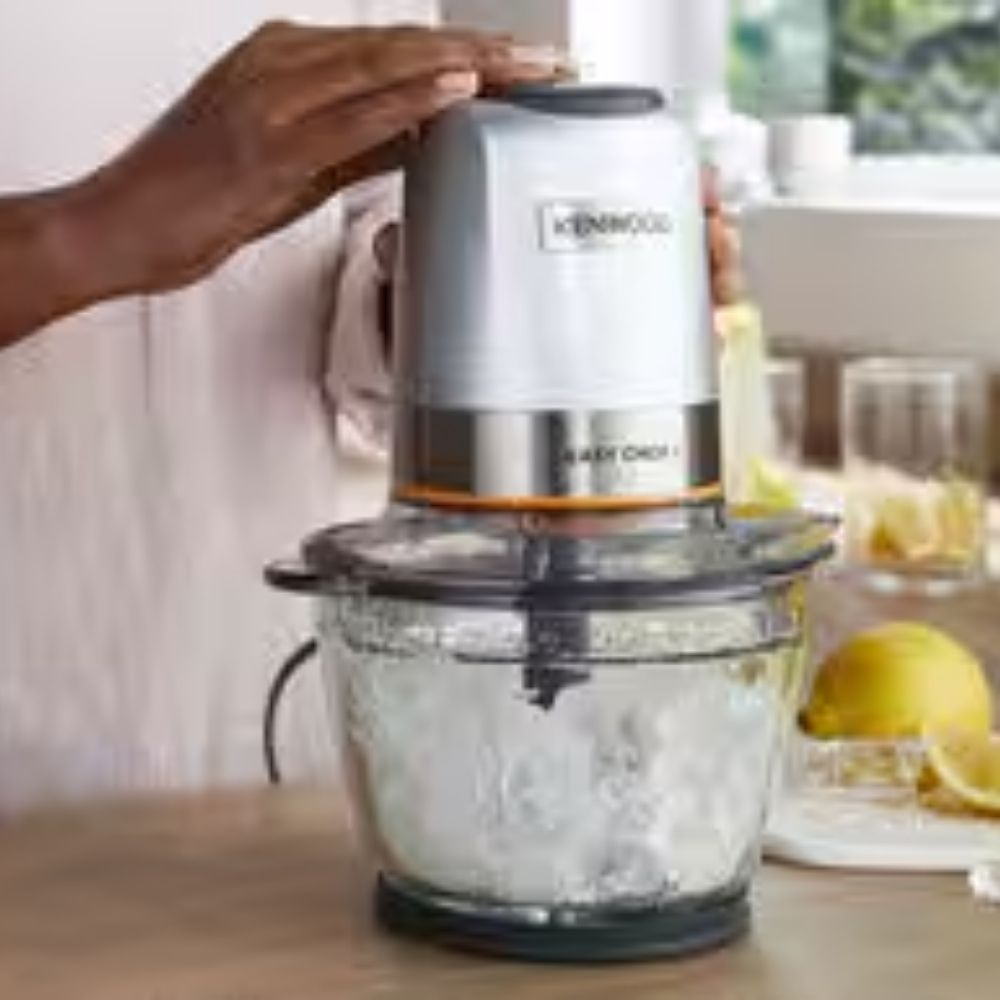
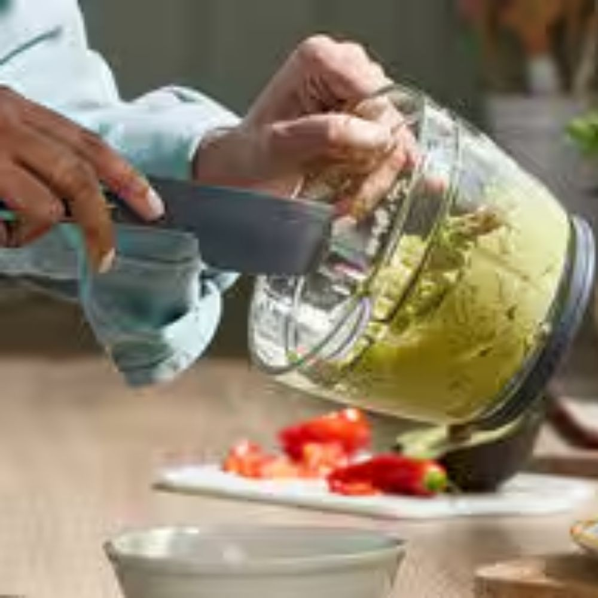
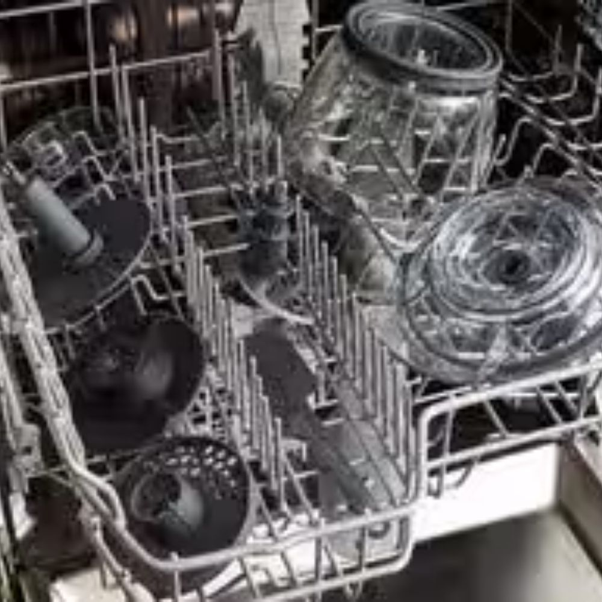
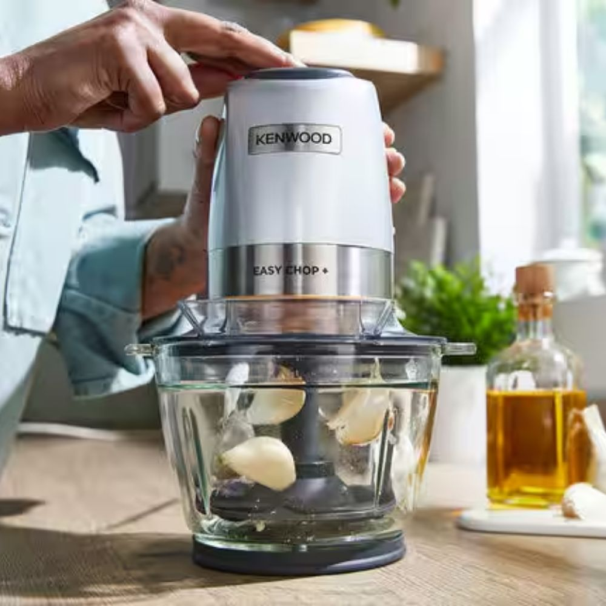

<style type="text/css">
.product-description {
  max-width: 1200px;
  margin: 0 auto;
  padding: 40px 20px;
  background-color: #fff;
  color: #333;
}

.feature-grid {
  display: grid;
  grid-template-columns: repeat(4, 1fr);
  gap: 30px;
}

.feature-item {
  text-align: center;
  background-color: #fafafa;
  border-radius: 12px;
  padding: 20px;
  box-shadow: 0 3px 10px rgba(0, 0, 0, 0.08);
  transition: transform 0.3s ease, box-shadow 0.3s ease;
}

.feature-item:hover {
  transform: translateY(-5px);
  box-shadow: 0 5px 15px rgba(0, 0, 0, 0.15);
}

.feature-item img {
  width: 80%;
  height: auto;
  border-radius: 10px;
  margin-bottom: 15px;
}

.feature-item h5 {
  font-size: 1.1rem;
  color: #302f2f;
  font-weight: 600;
  margin-bottom: 10px;
}

.feature-item p {
  font-size: 0.95rem;
  line-height: 1.6;
  color: #555;
}

@media (max-width: 800px) {
  .feature-grid {
    grid-template-columns: 1fr;
  }
}
</style>
<section class="product-description">
<div class="feature-grid">
<div class="feature-item">
<h5>D&ouml;rt Bı&ccedil;aklı Sistem</h5>

<p>D&ouml;rt katmanlı paslanmaz &ccedil;elik bı&ccedil;ak sistemiyle hızlı, eşit ve hassas doğrama sonu&ccedil;ları elde edin. Optimize edilmiş bı&ccedil;ak yapısı sayesinde performans artışı sağlar.</p>
</div>

<div class="feature-item">
<h5>Gelişmiş Kavrama Teknolojisi&nbsp;</h5>

<p>Ergonomik tasarımı ve geliştirilmiş kavrama alanı sayesinde maksimum kontrol sağlar. Paslanmaz &ccedil;elik bı&ccedil;aklarla g&uuml;venli ve verimli bir kullanım sunar.</p>
</div>

<div class="feature-item">
<h5>Hazırlama ve Saklama Kapağı</h5>

<p>Doğradığınız malzemeleri taze tutun ve daha sonra kullanmak &uuml;zere rondo haznesinde saklayın. Pratik kapağı sayesinde kolayca koruyabilirsiniz.</p>
</div>

<div class="feature-item">
<h5>Tek Dokunuş Kontrol&uuml;</h5>

<p>İki kademeli hız ayarına sahip tek dokunuş sistemiyle istediğiniz kıvamda doğrama yapabilirsiniz. Hızlı, pratik ve kolay kullanım sağlar.</p>
</div>

<div class="feature-item">
<h5>Buz Kırma &Ouml;zelliği</h5>

<p>Soğuk i&ccedil;ecekleriniz ve dondurulmuş tatlılarınız i&ccedil;in buzları kolayca kırar. G&uuml;&ccedil;l&uuml; motoru sayesinde p&uuml;r&uuml;zs&uuml;z sonu&ccedil;lar elde edebilirsiniz.</p>
</div>

<div class="feature-item">
<h5>Mini Spatula</h5>

<p>600 ml kapasiteli rondo haznesinde kalan t&uuml;m malzemeleri kolayca toplayın. Mini spatula sayesinde hi&ccedil;bir malzeme ziyan olmaz, her lezzet değerlidir.</p>
</div>

<div class="feature-item">
<h5>Bulaşık Makinesinde Yıkanabilir Par&ccedil;alar</h5>

<p>Rondo haznesi, bı&ccedil;aklar ve kapak bulaşık makinesinde yıkanabilir. Her kullanımdan sonra hijyenik temizlik sağlar.</p>
</div>

<div class="feature-item">
<h5>G&uuml;&ccedil;l&uuml; Motor Performansı</h5>

<p>500 Watt motor g&uuml;c&uuml;yle en zorlu doğrama işlemlerini bile kolayca tamamlar. Sebzelerden kuruyemişlere kadar y&uuml;ksek verim ve dayanıklılık sunar.</p>
</div>
</div>
</section>
